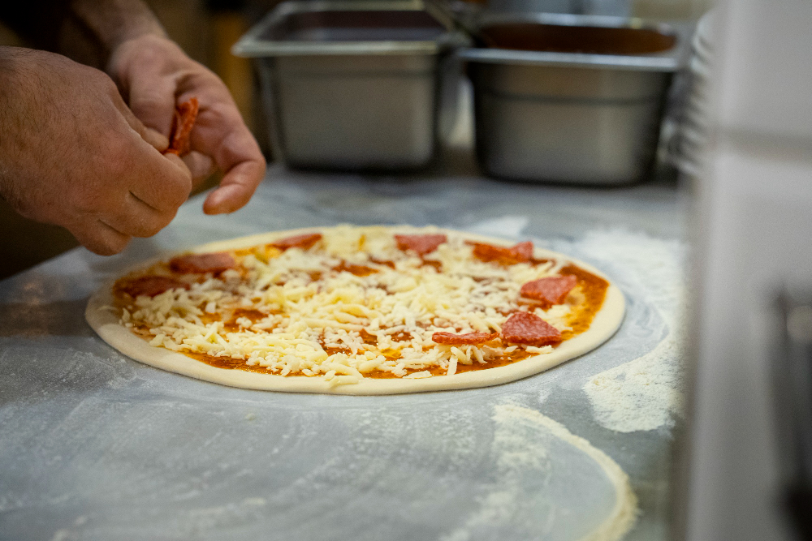

Monte sua pizza do jeito que você gosta!
Tudo começou nos anos 90, quando Carlão, um apaixonado por culinária, decidiu transformar seu sonho em realidade. Nascido e criado no bairro do foguete, em Cabo frio, Carlão sempre teve um talento especial para criar receitas únicas e saborosas. Sua paixão por pizzas começou cedo, quando ajudava seu avô, um imigrante italiano, a preparar massas caseiras em um pequeno forno a lenha.
Em 1999, Carlão decidiu abrir sua própria pizzaria, com o objetivo de trazer para o público o verdadeiro sabor da pizza artesanal, feita com ingredientes frescos e muito amor. A "Pizzaria do Carlão" nasceu como um pequeno estabelecimento no coração do Brás, mas rapidamente ganhou fama pela qualidade das pizzas e pelo atendimento caloroso.
Hoje, a Pizzaria do Carlão é um ponto de referência para os amantes de pizza em Cabo frio. Carlão continua pessoalmente supervisionando cada pizza que sai do forno, garantindo que cada cliente tenha uma experiência única e memorável. Sua filosofia é simples: "Pizza é feita com amor, e amor a gente sente no sabor."
